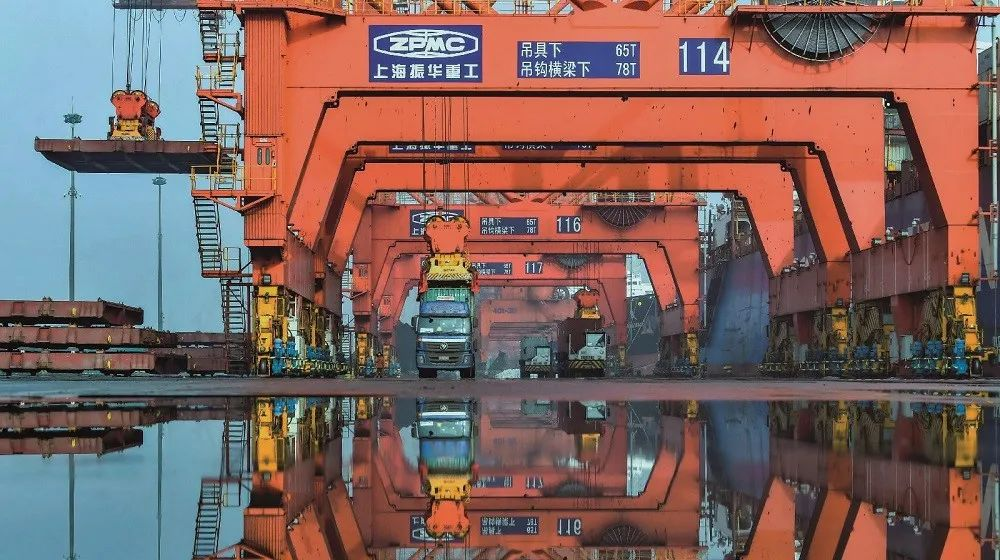

武汉三大产业震荡中自救
原文链接 备份链接 疫情冲击下，相对于集成程度较低的医疗制造业，以及部分进口替代为背景的光电子产业，武汉汽车工业在全球供应链中的地位更为关键 文 |《财经》记者 降蕴彰 李皙寅 实习记者 苏鹏 编辑 | 王延春 施智梁 位于武汉光谷中心城 …

尽管疫情影响到部分制造业零部件的加工生产，导致一些跨国公司生产中断，但并不会对供应链产生可以衡量的长期影响。中国30年打造的供应链，短期内无法被完全取代

供应链的脆弱让不少欧美业者考虑转移生产的可能。图/新华
文 |《财经》记者 蔡婷贻 王晓霞 降蕴彰 驻华盛顿特派记者 金焱
编辑 | 王延春
两周前，位于山东青岛的国轩电池开始分阶段复工，然而受限于原材料供应不足，目前复工率仅为50%。
不像国轩电池这么顺利，浙江嘉兴大麻镇的煜华纺织公司因为疫情“原料进不来，产品出不去”，至今仍无法开业。其所在的大麻镇，以生产家纺产品闻名，整个镇截至2月24日有95%的企业尚未开业。大门紧锁，少有人流。
国轩能复工并非侥幸，该公司董事长汪卫东对《财经》记者指出，国轩在疫情发生第一时间就组建了抗击疫情领导小组，建立联络员制度、复工人员每日活动范围、身体状况登记制度，此外，企业每天测量三次体温，对工厂定时消毒、宿舍通风消毒、口罩等防疫物资储备发放都有要求。
他介绍，目前主要受制于原材料供应不足，产能无法完全恢复，企业只好根据自身原材料供应、生产订单等情况做应急安排。政府部门也提供了复产复工的绿色通道，订单部分未受疫情影响。
位于杭州的家具、卫浴设备供应商Sunzoom Household是获得美国酒店连锁品牌希尔顿认证的供应商，在重新安排生产和交货时间的同时，Sunzoom Household已经感觉到部分客户的裹足不前，因此在阿里巴巴的网站上用英文大字写着“工厂已经恢复运转，来谈生意吧”。该公司CEO许朝阳对《财经》记者指出，因为疫情，一些客户综合考量成本等问题，将部分订单转移到东南亚地区等情况确实存在。
这场起自武汉的新型冠状病毒肺炎，短短数周蔓延中国也传播海外，不仅挑战全球医疗，更是侵蚀着全球经济。随着疫情在日本、韩国、意大利、伊朗蔓延，投资人信心开始变得灰暗。2月24日至26日三个交易日，道琼斯指数狂跌2000点。牛津研究院预测，新冠肺炎疫情冲击将导致2020年全球经济增长减少0.2个百分点，年增速跌至2.3%。对全球经济供给和需求的双重负面影响尤其引发关注。
中国、日本、韩国以及越南是全球制造业产业链的重要组成部分。来自世界银行的数据显示，2018年，日本、韩国、越南的制造业增加值分别占世界总制造业增加值的7.11%、3.11%和0.28%。如果加上中国，则四国占世界制造业增加值接近40%。随着新冠肺炎疫情不断蔓延，当前全球制造业供应链的危机正在扩散。
更为重要的是，作为“世界工厂”，中国的供应链是全球嵌入式，疫情对中国经济和企业的影响开始逐渐波及到世界各地，比如电子行业、汽车行业，甚至游戏、快消等行业。韩国现代汽车就因为零部件供应缺口，在2月初暂停韩国的数个组装厂 ；日产汽车也因为同样原因暂停九州厂的生产；美国苹果公司宣布因受新型冠状病毒疫情影响，中国生产的芯片供应受阻，预计无法达成本季度的销售目标；而在大洋彼岸的游戏巨头任天堂旗下的热销产品Switch也因零部件短缺即将面临全球断货。
实际上，在中美贸易战及新型冠状病毒疫情的相继冲击之下，中国制造业供应链体系的长期稳定性亦引发关注，一些企业对制造业供应链安排的缺陷开始反思。尽管目前难以预测新型冠状病毒疫情究竟影响供应链几何，但一些企业已开始调整战略，其中包括在不同的国家建立多个供应商网络。缩短供应链，让沟通更便捷，重新安排和计算供货及物流，优化库存，等等。
不过，很多企业也看到危中存机。在新冠肺炎疫情对制造业供应链冲击的大考下，企业意识到自身供应链在规划与管理上的弱点和盲点。从供应链的串联到并联，从柔性链到韧性链，企业希望制造业供应体系的完善得以应对未来可能出现的自然灾害、政局动荡等诸多黑天鹅或灰犀牛事件。
中国制造的地位和市场
2月18日美国苹果公司发出财务预警指出，由于在中国的代工厂受疫情影响恢复生产比预期慢，因此至3月底为止的季度营收可能无法达到原定630亿－670亿美元的目标。消息一出，苹果股价一度下跌2%，带动其他亚洲零部件供应商股价下滑。
在苹果发出预警之前，日本游戏公司任天堂2月6日通过推特向消费者宣布，新版Switch受到疫情影响将延迟销售；接着美国玩具公司MGA 指出，疫情已经影响到圣诞节玩具出货，目前情况“让人非常挫折”。
目前中国贡献着80%的全球玩具生产。以美国玩具公司MGA为例，该公司签约的50家国内厂商通常在农历年后开始生产秋季和圣诞节订单，但是疫情导致工厂复工延迟，该公司总裁拉兰（IssacLarian）指出，“2020年的圣诞节就是12月25日，你不可能把它延后。”
随着新型冠状病毒疫情蔓延，中国各地工厂和工人配合落实相关防疫措施，有的延迟复工，有的产能不足，对全球制造业供应链造成不同程度的冲击，不少产业面临停摆或断链，其中电子业和汽车制造业尤为明显。传统制造业中服装、制鞋和玩具业等也因工厂延迟开工或产线无法完全恢复而开始担心下半年的产品供应短缺。
根据统计，中国是全世界唯一拥有联合国产业分类当中全部工业门类的国家。在世界500多种主要工业产品当中，中国有220多种工业产品的产量居全球第一。
麦肯锡咨询公司2019年发表的中国与世界报告指出，自2003年以来，中国对全球经济的依赖在降低，但是全球经济对中国的依赖却在增加。报告指出，中国自2009年成为全球最大出口国，2013年成为最大货物贸易国，全球货物贸易占比从2000年的1.9%提升到2017年的11.4%。同时中国也是33个国家的最大出口国，65个国家的最大进口国。该报告估算，中国对全球制造业的贡献达35%，其中零部件占外国品牌手机的35％－50％、农业机械的60％－80%、电子汽车的60％－75%。
不只是制造，世界银行统计显示，自2010年－2017年中国带动了全球家庭消费增长31%，同时也是全球最大的汽车、手机、奢侈品和酒类市场，占全球消费市场的30%。根据统计，这次疫情将减少全球奢侈品市场约400亿美元的营收，英国风衣品牌Burberry、美国皮件Coach 和拉夫劳伦（Ralph Lauren）都已经发出营收预警。
这场突入其来的疫情让国内外企业首次同时面对供需都出现缺口的挑战。美国商会上海分会2月11日－14日针对109家长三角美商的调查显示，48%接受调查企业的全球业务已经受到疫情影响。其中35%的企业指出，目前最需要做的就是允许工厂复工，78%接受调查企业指出，他们缺乏足够人员来恢复全产能，41%的企业强调缺工是他们在未来2周－4周遇到的最大问题。除此之外，58%的企业也开始担心未来数月市场需求会低于常态。
欧洲商会2月27日公布的最新调查显示，90%的商会成员表示受到疫情中度或高度影响，将近一半的成员表示企业营收将出现两位数下滑，25%成员表示营收将下滑超过20%。
“制造中心”会否停摆
商业机构邓白氏（Dun&Bradstreet）从国内疫区和产业比对出疫情可能造成的具体伤害，2月11日发布的报告指出，新型冠状病毒肺炎疫情影响的主要行业依序为服务业、批发业和制造业，这几个行业的65%相关业务在疫情感染区域内。
新加坡AC贸易咨询公司周美玲（Angelia Chew）对《财经》记者表示，原材料和零部件的供应缺口是中国以外制造商面对的迫切问题、物流是第二个问题，“有的尽管找到材料，但是飞机禁运”。
在供应链的紧密分工下，缺少一个小螺丝或弹簧，就可能导致整个产品无法完成制造。
以一个1元人民币的美容产品容器为例，需要塑料瓶身、弹簧和钢珠组成压头，因为空瓶占空间，美容产品厂家平时不预留库存，但是现在受疫情影响，全球美容产品业者面临买不到空瓶的困境而无法出货。部分中国台湾地区的从业者考虑向韩国下单时，却发现韩国厂商的生产基地也在中国大陆。
纺织业者对供应链的缺口也十分着急。五洋纺织总经理王水对《财经》记者指出，配套的外协单位，像铸造、电镀、发黑处理、热处理等行业复工进度较为缓慢，影响到整个生产供应链。他预估影响可能持续到4月－5月份，“第一季的数据估计不能看。我做最坏的打算，储备3个月的流动资金，渡过难关，纺织行业打击还是很大的。”
美国供应链咨询公司Sourcify芮氏尼克（Nathan Resnick）对《财经》记者指出，各个行业现在急着寻找新的替代供应商。
根据国泰君安的调查，疫情暴发阶段，短期供应链风险将集中在汽车与机械设备（零部件）、光学电子设备（半导体材料）和化工产品。但是国泰君安首席经济学家花长春对《财经》记者解释，产业链是上下游需求的问题，供应链主要是指同一产业上零部件是否齐全。他解释，这次疫情打乱全球供应链的其中一个原因是因为中国是中间品的主要提供者。联合国商品贸易统计（Comtrade）数据库显示，中国对64个国家中间品的出口占当地国家的比重超过10%，全球主要经济体基本都包含在内。
欧洲商会主席伍德克对《财经》记者指出，供应链越长的产业，相关企业就会遇到越多问题。以汽车制造为例，就算其中一家零部件厂开始顺利运转，但是当其他重要零部件生产延后时，生产线终究会面临无法完成组装。
以电子产品制造而言，各工厂产能缩减之外，核心原料的供应不足也影响最终产品的组装。制造电视机、钟表、汽车玻璃所需的稀土生产，由于货车司机拒绝进出疫区，稀土供应一旦出现短缺，电子产品制造面临中断危机。
就算原材料供应可以解决，企业内部的防疫措施是另一层挑战。手机传感器供应商对《财经》记者指出，疫情蔓延造成工厂目前只能恢复40%的产能，其他零部件厂的情况也大概如此。主要原因除了工人回到工厂需要先隔离14天外，目前复工的工厂要求工人需间隔2公尺。如果疫情能顺利控制，产能完全恢复最快也要到4月。
负责组装iPhone、全球桌上型电脑、笔记本电脑等电子产品的富士康为了复工，2月5日开始在广东龙华试产口罩，希望2月底达日产200万只口罩的目标。富士康台湾母公司鸿海精密2月20日公告指出，目前复工较为谨慎，疫情对全年营收将带来负面影响。根据报道，富士康郑州厂和深圳厂受到较大冲击，目前正缓慢复工。
国泰君安的调查显示，2月底除湖北地区外，全国的复工情况会好起来，湖北地区预计3月底前会起来。“疫情对企业的影响不会很大，比如通信行业只要复工了，我相信肯定是加班加点地运转，机械设备不用休息，人员可以三班倒，只要复工之后疫情没有出现反复，很快就可以把供应链赶上来。”花长春强调，“总体上看，我觉得短期风险是可控的，因为目前看上去整个疫情的数据除了湖北地区之外都明显好转，湖北地区相信按照目前的力度推进下去也会好转。”
拯救脆弱的供应链
国内庞大市场的吸引力和完整的产业链伴随着疫情的发生，对欧美企业形成新的布局考验，近来在美国2020总统初选也成为关注焦点。
美国民主党候选人华伦指出，美国应该想办法把疫情对供应链制造的伤害管控到最小，美国政府应该帮助美国制造商找到替代零部件供应商，同时协助出口商找到新客户。
伍德克也指出，受这次疫情影响，企业在全球布局上希望能够找到完全取代中国产能的地方，此前美中贸易战确实让部分企业重新思考他们对中国的依赖，新型冠状病毒疫情更加重了这个问题。
供应链的脆弱让不少欧美业者考虑转移生产的可能。上述传感器业者指出，这次疫情意外中断的制造对企业造成严重的心理冲击，为了规避风险所有外籍干部暂时不用到疫区出差，接下来“欧美产品的零部件制造都得考虑移出中国以分散风险……后面的客户要求已形成庞大压力”。
中国社科院世经所研究员徐奇渊告诉《财经》记者，中国出口的中间产品无法交货，确实导致其他国家生产过程出现中断。若疫情持续发酵，全球供应链的冲击将可能沿两条主线展开：
一条主线是，对中国中间品依赖度普遍较高的新兴市场和发展中国家的供应链危机，但对应的产业集成度较低，破坏相对有限。
另一条是供应链冲击在欧美日之间扩散、放大，一些集成度较高的供应链将遭到破坏，全球经济将陷入灰犀牛式的冲击。
不过，全球产业集群的“备胎”不可能一夜之间完成。
随着中美贸易争端加剧，很多企业急于在东南亚国家建立新的供应链，但他们很快发现，没有任何地方能像中国这样可以提供完整的解决方案。
卢森堡供应链专家曼汀对《财经》记者指出，这次疫情对供应链的挑战，反映出的其实是供应链不完全透明造成的脆弱，这次冲击引发的讨论是替代供应链的重要性，但是替代供应商如果是同一个国家，问题仍无法解决，况且随着疫情在全球升温，对疫情已经不再是个别国家的问题了。
在跨国企业需考量市场和避险的同时，花长春认为，接下来一些跨国企业会提高库存，此次疫情的冲击可能会使企业重新思考最优库存问题；接着电子和通信业可能加快把部分供应链转移到海外。
但是国内一直担忧的大规模转移不会轻易发生。
一位市场调研中心的专家对《财经》记者强调，中国围绕产业链形成的产业链、供应链、服务链、价值链体系是完整的，整个服务配套能力以及上下游关系，是经过几十年市场跨国界合作形成的，目前，大部分制造业产业集群仍在中国。
“尽管这次疫情带来的冲击很大，但中国在全球供应链中的地位仍然会稳固。产业链、供应链、服务链转移的成本高昂，转移速度也不会那么快。”上述专家补充表示，近来的转移热点印度和越南等国家在基础设施、劳动力、政策配套等都仍有不足。
熟悉东南亚整体情况的周美玲也同意这个看法，尽管欧美客户希望分散风险，但是东南亚国家无论在基础设施、工人数量和技术上都无法立即承接转单，全球对中国制造的依赖短期间无法取代，“只要能克服这次挑战，需求还是在”。
Cox Pacific 咨询机构负责人贺翔对《财经》记者强调，中国花30年打造的供应链，短期内无法被完全取代，部分国家和企业领导人或许过度恐慌了，“没有足够的理由让人们这样恐慌。我相信它会对供应链产生一些短期的影响，一些订单会被延迟或重新规划，也很可能出现短缺的问题，但是我不认为此次新冠病毒疫情暴发对供应链会产生可以衡量的长期影响”。
中美贸易战倒逼中国加速向产业链高端布局，能撑得过近两年贸易战洗礼的企业，不会因为一个多月疫情的冲击断然舍弃中国。这几年产业链该转移的都基本转移了，留下来的产业链不容易被轻易替代。
本文首刊于2020年3月2日出版的《财经》杂志

▲点击图片查看更多疫情报道
责编 | 黄端 duanhuang@caijing.com.cn
本文为《财经》杂志原创文章，未经授权不得转载或建立镜像。如需转载，请在文末留言申请并获取授权。
原文链接 备份链接 疫情冲击下，相对于集成程度较低的医疗制造业，以及部分进口替代为背景的光电子产业，武汉汽车工业在全球供应链中的地位更为关键 文 |《财经》记者 降蕴彰 李皙寅 实习记者 苏鹏 编辑 | 王延春 施智梁 位于武汉光谷中心城 …
原文链接 备份链接 ***************************************▲*************春节前，日本生活空间nikoand在上海开设全球最大旗舰店，开业当天，成百上千的消费者在淮海中路分批排队，预计等 …
原文链接 备份链接 一些防疫措施影响到部分零部件加工生产，部分跨国公司订单中断。供应链较长且分工复杂的汽车和电子制造行业，压力更加明显。但此次疫情并不会对供应链产生可以衡量的长期影响。中国花30年打造的供应链， …
原文链接 备份链接 _ 各地的隔离措施在阻断疫情传播人流的同时，也阻断了货运物流，这成了许多制造企业复工的难题；此外，防控措施和复工审批进程也给复工前景增添了变数 _ 文 |《财经》记者 韩舒淋 编辑 | 余乐 疫情之下，科技公司还能借助 …
原文链接 备份链接 _ 疫情首先冲击劳动密集型的电子组装制造工厂，引发供应链上的各种连锁反应，可能在短期内延缓中国电子信息制造产业飞奔的脚步，政府、行业协会和企业应需要多种形式的互助和自救 _ 文 |《财经》记者 周源 陈潇潇 编辑 | …